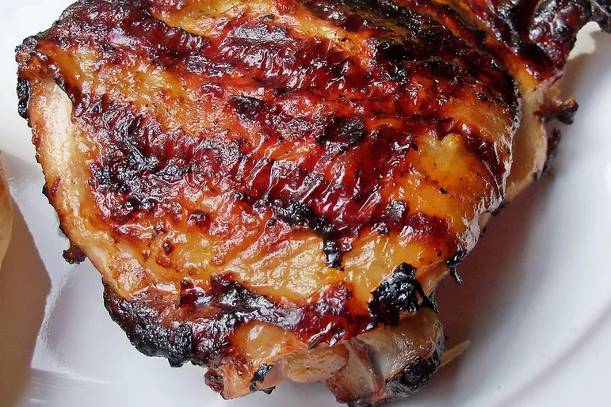

Italian Chicken Marinade
Description
This Italian dressing chicken marinade is a super simple but delicious way to
add flavor before grilling. The nutrition data for this recipe includes
information for the full amount of the marinade ingredients. Depending
on marinating time, ingredients, cook time, etc., the actual amount of the
marinade consumed will vary.

- 1 (16 ounce) bottle Italian-style salad dressing
- 1 teaspoon garlic powder
- 1 teaspoon salt
- 4 skinless, boneless chicken breast halves
Steps:
- Whisk salad dressing, garlic powder, and salt together in a shallow baking
dish; add chicken breasts and turn to coat. Cover the dish with plastic wrap
and marinate in the refrigerator, 4 hours to overnight.
- Preheat an outdoor grill for high heat and lightly oil the grate.
- Remove chicken from marinade and shake off excess; discard remaining
marinade.
- Cook chicken on the preheated grill until no longer pink in the center and the
juices run clear, about 7 to 8 minutes on each side. An instant-read
thermometer inserted into the center should read at least 165 degrees F (74
degrees C).